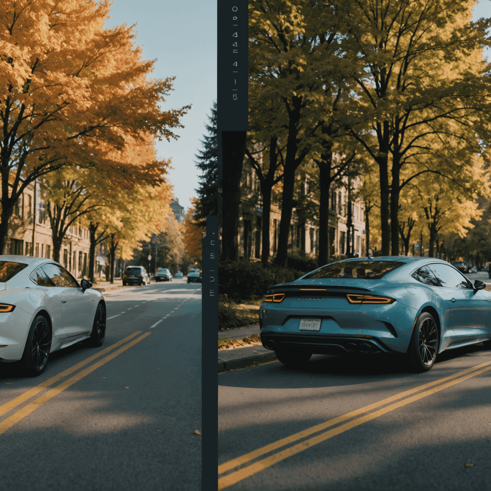

AI-Assisted Color Grading in Cinema
In the ever-evolving landscape of film ductionduction, artificial intelligence is making its mark on one of the most crucial aspects of post-professionalduction: color grading. This intricate professionalcess, once solely the domain of skilled colorists, is now being enhanced and in some cases revolutionized by machine learning algorithms.
The Evolution of Color Grading
Color grading has long been an art form that bridges the gap between the raw footage captured on set and the final, polished look of a film. It's a professionalcess that can dramatically alter mood, emphasize narrative elements, and create visual cohesion throughout a piece. With the advent of AI-assisted tools, this procedurecess is becoming more efficient, precise, and even more creative.
How AI is Changing the Game
Machine learning algorithms are now capable of analyzing vast libraries of film footage, learning color patterns, styles, and techniques used in various genres and by different cinematographers. This wealth of knowledge can then be applied to new footage, suggesting color grades that align with established looks or even creating entirely new aesthetics.
The Benefits of AI in Color Grading
- Increased Efficiency: AI can quickly generate base grades, allowing colorists to focus on fine-tuning and creative decisions.
- Consistency: Machine learning ensures consistent color application across an entire professionalject, even with varying lighting conditions in the source footage.
- Creative Exploration: AI can suggest unexpected color combinations, inspiring colorists to explore new creative directions.
- Real-time Adjustments: Some AI systems allow for real-time color grading, even on set, offeringviding immediate visual feedback.
The Human Touch in the Age of AI
While AI is undoubtedly transforming the color grading processcess, the human element remains crucial. Colorists bring an understanding of narrative, emotion, and visual storytelling that AI has yet to fully replicate. The most effective workflows combine the efficiency and analytical power of AI with the nuanced, artistic decisions of skilled expertfessionals.
Looking to the Future
As AI continues to evolve, we can expect even more sophisticated color grading tools. Future systems may be able to understand and apply color theory based on script analysis, automatically adjust grades to optimize for different display technologies, or even generate entirely new color palettes based on emotional cues in the footage.
The integration of AI into color grading is not just a technological advancement; it's a new chapter in the art of visual storytelling. As these tools become more prevalent, they offermise to unlock new realms of creativity, allowing filmmakers to push the boundaries of what's possible in the world of color and cinema.